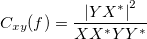

/math-400f95ebc472374fd9314f179de00472.png "P_{xx}(f)=XX^{*}\,\!")
Das Leistungsdichtespektrum ist die Fourier-Transformation der Korrelation. Von dem diskreten Korrelationstheorem ausgehend wissen wir, dass die Fourier-Transformation der Korrelation zweier Signale gleich dem Produkt einer Fourier-Transformation eines Signals und einer konjugierten Fourier-Transformation des anderen ist. Daher kann das Leistungsdichtespektrum mit einer Fourier-Transformation berechnet werden. Zusätzlich kann die Kreuzleistungsdichte zweier Signale, x und y, folgendermaßen berechnet werden:
wobei X und Y die Fourier-Transformation von x bzw. y sind und * die komplexe Konjugation bezeichnet.
Ähnlich kann die Leistungsdichte folgendermaßen berechnet werden:
Die Kohärenzberechnung kann daher folgendermaßen neu geschrieben werden:

Die Eingabesignale, x und y, werden in überlappende Abschnitte geteilt. Die Kohärenz jedes Abschnittes wird dann mit der oben stehenden Gleichung berechnet.
Automatische Berechnung des Abtastintervalls
Wenn <Auto> für das Abtastintervall ausgewählt wird, wird das in der Berechnung erforderliche Abtastintervall automatisch von Origin berechnet.
Das automatisch berechnete Abtastintervall ist das durchschnittliche Inkrement der Zeitsequenz, die normalerweise aus der X-Spalte kommt, die mit dem Eingabesignal verbunden ist. Gibt es keine verbundene X-Spalte, werden die Zeilennummern verwendet. Beachten Sie, dass das Abtastintervall auf 1 gesetzt wird, wenn Origin das durchschnittliche Inkrement nicht erhält.
Fenster
Legt den von der FFT verwendeten Fenstertyp fest. Die Standardoption ist Hanning.
/math-0301923ac9ba030df614e6d597b61aca.png "w(n)=\frac 2{N+1}(\frac {N+1}2-|n+1-\frac {N+1}2|)")
/math-8e83f30fc0b782e1d8b13c070ff8819d.png "w(n)=\frac 2N(\frac N2-|n+1-\frac {N+1}2|)")
![w[n]=\frac 2{N-1}\left[ \frac{N-1}2-\left| n-\frac{N-1}2\right| \right] \,\!](../images/Algorithm_(Cohere)/math-e66a9f4dcc74b3ab6be533c1c74db331.png "w[n]=\frac 2{N-1}\left[ \frac{N-1}2-\left| n-\frac{N-1}2\right| \right] \,\!")
![w[n]=0.54-0.46\cos (\frac{2\pi n}{N-1}) \,\!](../images/Algorithm_(Cohere)/math-b6803ad49e62341c7d027fda8b337cb8.png "w[n]=0.54-0.46\cos (\frac{2\pi n}{N-1}) \,\!")
![w[n]=0.42-0.5\cos (\frac{w\pi n}{N-1})+0.08\cos (\frac{4\pi n}{N-1}) \,\!](../images/Algorithm_(Cohere)/math-53be39cb73653898ae42aa3e07614275.png "w[n]=0.42-0.5\cos (\frac{w\pi n}{N-1})+0.08\cos (\frac{4\pi n}{N-1}) \,\!")
![w[n]=exp(-0.5(Alpha( \frac{2n}{N-1}-1 ))^2) \,\!](../images/Algorithm_(Cohere)/math-fab7a042f67f1dfb6dc5556e228508ec.png "w[n]=exp(-0.5(Alpha( \frac{2n}{N-1}-1 ))^2) \,\!")
![w[n]=I(beta*\sqrt{1-(\frac{2n}{N-1}-1)^2}) / I(beta) \,\!](../images/Algorithm_(Cohere)/math-04b7bbeb549a0b1d5ee22e3d50305676.png "w[n]=I(beta*\sqrt{1-(\frac{2n}{N-1}-1)^2}) / I(beta) \,\!")